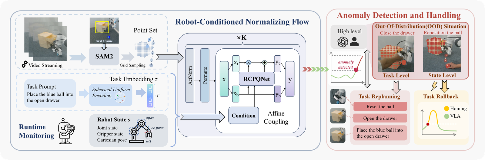
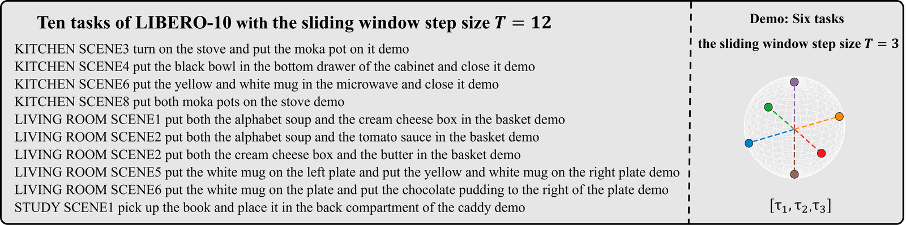
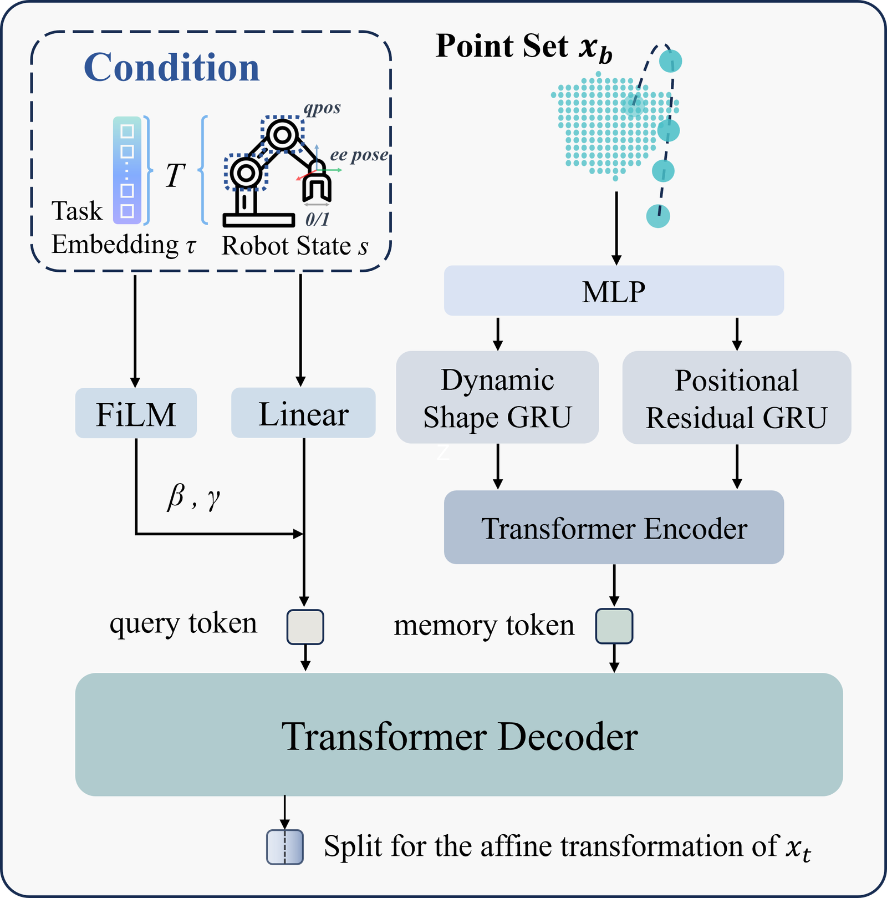
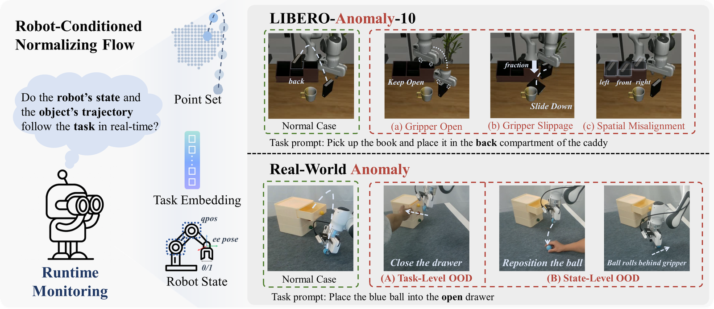
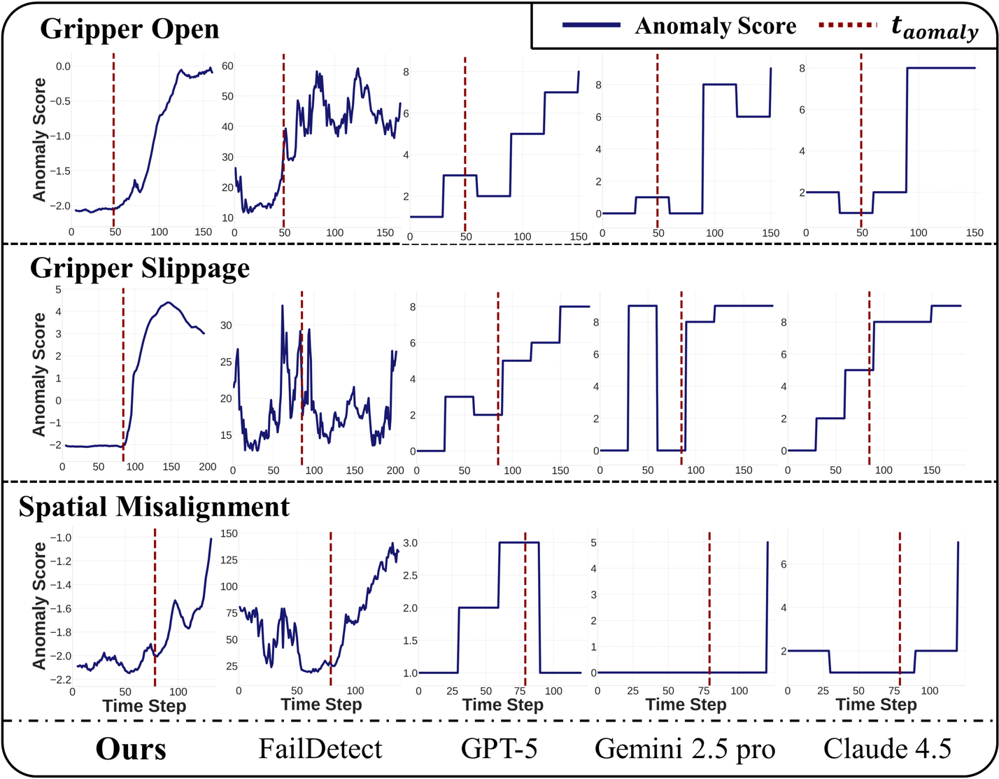
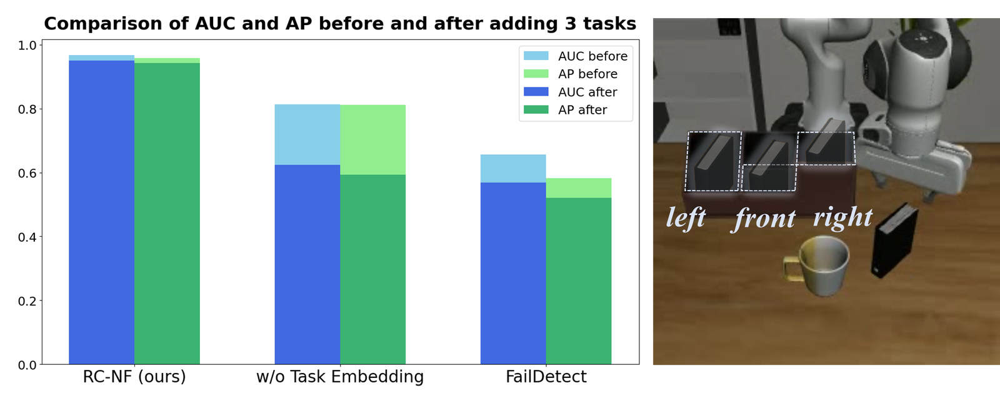
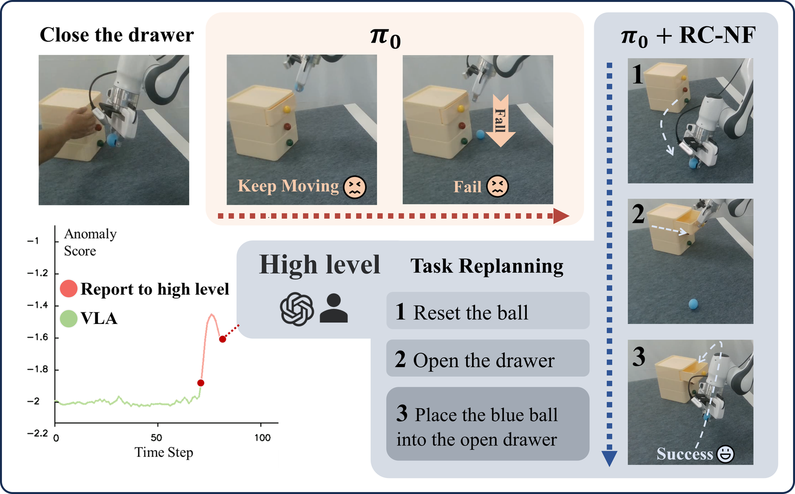
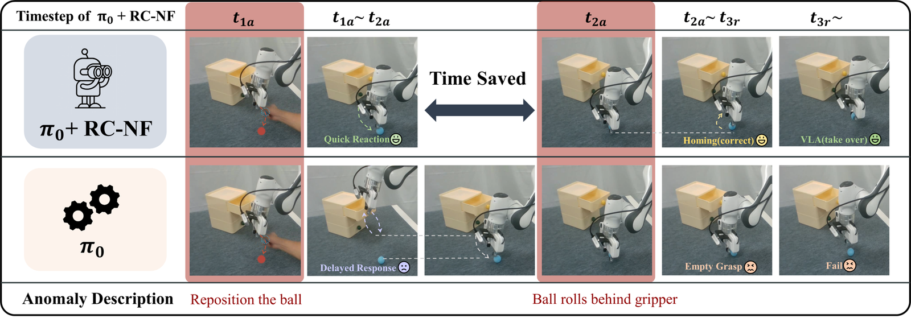
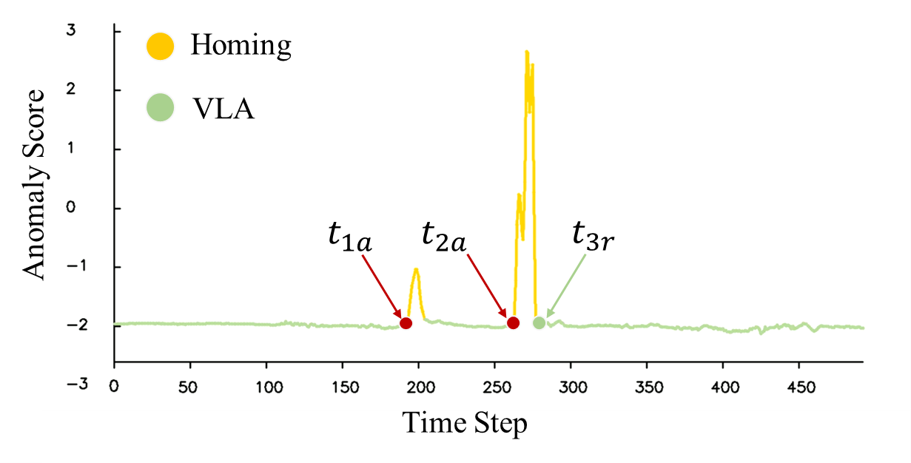
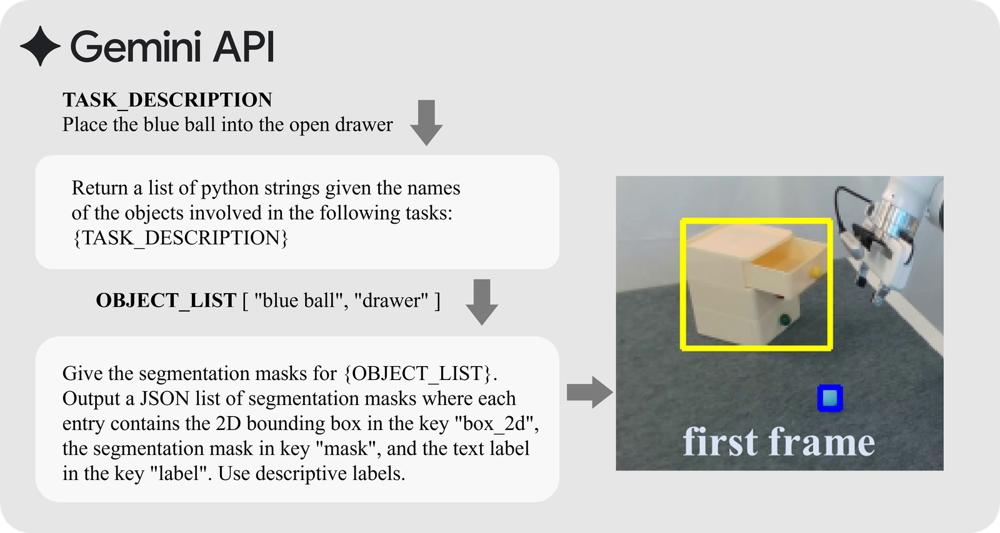

§030 秒速覽
四個關鍵數字，抓住全文骨架
§1問題：VLA 為什麼需要監工
模仿學習的老毛病：分佈外不自知
VLA（Vision-Language-Action）模型把語言指令直接映射成低階控制動作，但它的訓練方式是模仿專家示範——這意味著它只「看過」成功的世界。部署到動態環境，兩種 OOD（Out-of-Distribution，分佈外）狀況會頻繁出現，而 VLA 對兩者都渾然不覺：
- Task-level OOD：指令已經不成立。例如指令是「把藍球放進打開的抽屜」，抽屜卻中途被關上——再怎麼執行都是錯的，需要重新規劃任務。
- State-level OOD：指令還成立，但軌跡飄了。例如球從夾爪掉回桌上——任務沒變，只要把軌跡調回訓練分佈內就能繼續。
監控這件事，先前有兩條路，各有死穴：
- 狀態分類／行為樹：把失敗偵測當分類問題，要嘛列舉所有異常型態、要嘛手工定義前置條件——真實操作的組合變化根本列不完。
- VLM 監工（如 Sentinel 與各種雙系統架構）：語意理解強，但要多步推理，延遲以秒計——等它想完，機械臂已經把錯誤執行完了。
§2方法總覽：三路輸入，一條 flow
SAM2 點集 × 任務 embedding × 機器人狀態 → 異常分數 → 分級處置

整條管線的分工非常清楚：
- 看物件：SAM2 從影像流分割出被操作物件的遮罩，格點採樣成點集
x ∈ R^(B×T×N×2)——T 是滑動視窗步數（12），N 是每個遮罩的採樣點數。點集比原始影像特徵抗噪（分割已把背景排除在外），又比稀疏關鍵點多了「形狀」資訊——物件被壓扁、翻倒、滑走，都是點集形狀的變化。 - 看自己：機器人狀態 s 包含關節角、夾爪開合、末端位姿——「物件沒動、但我的手不在該在的位置」這類異常靠它。
- 知道在做哪件事：任務 embedding τ 告訴 flow「現在的正常是哪一種正常」——同一段軌跡在任務 A 正常、在任務 B 可能就是異常。
§3Normalizing Flow：為什麼它天生適合當異常偵測器
可逆變換 → 精確似然 → 異常分數不用學，直接算
Normalizing flow 的核心想法：用一串可逆的變換 f，把複雜的真實資料分佈 X 拉直成一個簡單的高斯分佈 Z。因為每一步都可逆、且 Jacobian 行列式可算，任何一筆資料的精確機率密度都能寫出來：
p_X(x) = p_Z(f(x)) · |det(∂f/∂x)|訓練＝在成功示範上最大化 log 似然；推論＝把 −log p 直接當異常分數。分數是「算」出來的，不是另外訓一個分類頭「學」出來的——這就是為什麼它只需要正樣本。
對照組 FailDetect 用的是 flow matching（一般作法是學向量場、以積分近似似然——本文未詳述其打分機制），並把原始影像特徵與機器人狀態串接後直接餵入。RC-NF 的兩個差異化選擇：特徵上用分割後的點集取代原始影像特徵（更抗噪）；結構上把條件與資料分開處理（見下節），論文將後面實驗中分數曲線更平滑穩定歸因於此。
任務 embedding：把 10 個任務推到球面上最遠的位置
任務指令不走文字編碼器，而是映射到一個 T 維超球面（半徑 R＝5、T＝12）上均勻分佈的向量——先用最佳化算法在球面上求出 10 個彼此距離最大化的點，再把 10 個任務一一對應上去。這保證不同任務的 latent「家」離得夠遠，density estimation 才分得開「任務 A 的正常」和「任務 B 的正常」。

§4RCPQNet：讓「機器人狀態」當提問者
query＝任務調制的機器人狀態，memory＝雙分支編碼的點集——decouple 而不斷開
Flow 的每個 step 裡，affine coupling layer 要用一半的輸入算出另一半的縮放 γ 與平移 β。RC-NF 把這個「算參數的網路」換成自家的 RCPQNet——名字長，但結構就是一個 cross-attention 的 transformer decoder，關鍵在「誰當 query、誰當 memory」：

- Task-aware Robot-Conditioned Query：機器人狀態先投影到 latent 空間，再用 FiLM 被任務 embedding 調制。直覺：讓「帶著任務意圖的機器人狀態」去質詢物件的運動——「照這個任務、我現在這個姿勢，你（物件）應該在哪、長什麼樣？」
- Dual-Branch Point Feature Encoding：點集特徵走兩條互補的路——Dynamic Shape branch 對每幀做中心化＋正規化，只留「形狀怎麼變」（平移、尺度都消掉）；Positional Residual branch 補回被正規化丟掉的絕對位置資訊。各自過 GRU 抓時間相依，最後由 Transformer encoder 融合。
§5異常判定與處置：閾值怎麼定、超標之後做什麼
conformal 式校準 + 兩級處置：先試 rollback，不行再 replan
閾值：從成功示範裡「校準」出來，不是拍腦袋
對每個任務 T，從成功示範切出兩份校準集 S₁、S₂：S₁ 算平均分數 μ_T，S₂ 算每筆分數對 μ_T 的偏差集合 D_T，取其 (1−α) 分位數：
Upper_T = μ_T + Q_(1−α)(D_T) （真機實驗 α＝0.05，沿用 FailDetect 的設計）訓練時另做了 debiasing：機械臂起步段軌跡高度一致、近抓取段變化大，樣本分佈天然不均——用 BalancedHardSampler 兩階段訓練壓掉冗餘樣本、加重稀有樣本，讓分數曲線在時間上平滑，閾值才能用一條不隨時間變動的靜態線。
處置：先輕後重
- State-level（任務還成立）：觸發 homing 程序做任務回捲——不是完整回到原點，而是局部調整軌跡直到異常分數降回閾值以下，然後把控制權無縫還給 VLA。
- Task-level（指令已不成立）：上報高層（人類操作員或 LLM 規劃器）做任務重規劃，生成新的子任務序列（例：重置球 → 先開抽屜 → 再執行原任務）。
實務上系統先做輕量的 state-level 恢復，不行才升級到 task-level 重規劃。
§6LIBERO-Anomaly-10：自建的三軸異常考卷
每種異常考一個不同的偏差軸——這是本文比較的主場

基於 LIBERO-10 建構，在 t_anomaly 時刻注入異常，之前標正常、之後標異常。三種異常各考一個軸：
| 異常 | 注入方式 | 考什麼 |
|---|---|---|
| Gripper Open | 該抓取時夾爪保持張開，物件原地不動 | 物件位置完全正常、只有機器人狀態不對——考「機器人–物件相對關係」的建模 |
| Gripper Slippage | 夾持中把摩擦力設為零，物件滑落 | 物件軌跡出現異常波動——考對物件運動的敏感度 |
| Spatial Misalignment | 機械臂走向錯誤隔間（左/前/右，正確是後） | 語意–空間錯位：動作流暢合理、只是方向錯了——考幾何而非語意 |
前兩種對 LIBERO-10 全部十個任務生成；Spatial Misalignment 針對「把書放進置物架後隔間」這個任務做三個錯誤方向。與先前聚焦「廣義任務失敗」的資料集不同，這三種都是操作特有（manipulation-specific）的異常。
§7主結果：VLM 的死穴在幾何
AUC＝整體判別力，AP＝不平衡資料下的查準查全——都與閾值無關
| 方法 | Gripper Open | Gripper Slippage | Spatial Misalign. | 平均 | ||||
|---|---|---|---|---|---|---|---|---|
| AUC | AP | AUC | AP | AUC | AP | AUC | AP | |
| GPT-5 | 0.9137 | 0.9642 | 0.8941 | 0.8720 | 0.4904 | 0.4015 | 0.8500 | 0.8507 |
| Gemini 2.5 Pro | 0.8644 | 0.9333 | 0.8633 | 0.8505 | 0.5167 | 0.4271 | 0.8186 | 0.8313 |
| Claude 4.5 | 0.8754 | 0.9401 | 0.8551 | 0.8285 | 0.5292 | 0.4290 | 0.8214 | 0.8249 |
| FailDetect | 0.7883 | 0.9032 | 0.6665 | 0.6932 | 0.6557 | 0.5820 | 0.7181 | 0.7700 |
| RC-NF（本文） | 0.9312 | 0.9781 | 0.9195 | 0.9180 | 0.9676 | 0.9585 | 0.9309 | 0.9494 |
表格裡最有戲的一欄是 Spatial Misalignment：三家 VLM 全部掉到 AUC≈0.5、AP≈0.4——跟丟銅板差不多。機械臂朝「左隔間」走和朝「後隔間」走，在語意層面都是「一隻手臂拿著書靠近置物架」，VLM 分不出來；RC-NF 不做語意，直接比對物件與機械臂的空間軌跡是否偏離該任務的正常分佈，拿下 0.9676。反過來，Gripper Open／Slippage 這種「畫面上有明顯事件」的異常，VLM 表現尚可（0.85–0.91）——VLM 的能力邊界劃在語意與幾何之間。

§8消融：哪一塊壞了，哪種異常先瞎
四個組件、三種異常——缺陷模式完全可預測，這是設計合理的最好證據
| 變體 | Gripper Open | Gripper Slippage | Spatial Misalign. | 平均 | ||||
|---|---|---|---|---|---|---|---|---|
| AUC | AP | AUC | AP | AUC | AP | AUC | AP | |
| RC-NF 完整版 | 0.9312 | 0.9781 | 0.9195 | 0.9180 | 0.9676 | 0.9585 | 0.9309 | 0.9494 |
| 去掉任務 embedding | 0.8769 | 0.9603 | 0.8668 | 0.8680 | 0.8139 | 0.8118 | 0.8643 | 0.9008 |
| 去掉機器人狀態 | 0.6327 | 0.8621 | 0.7443 | 0.8116 | 0.8929 | 0.8617 | 0.7152 | 0.8401 |
| 去掉 Positional Residual 分支 | 0.9045 | 0.9712 | 0.8971 | 0.9085 | 0.8543 | 0.8072 | 0.8947 | 0.9225 |
| 去掉 Dynamic Shape 分支 | 0.7666 | 0.9234 | 0.7763 | 0.8108 | 0.1022 | 0.2755 | 0.6841 | 0.7899 |
這張表好看的地方在於：每個組件的死法都對得上它的職責——
- 去掉機器人狀態 → Gripper Open 崩最慘（0.93→0.63）。夾爪張開不會移動物件，異常只存在於「機器人–物件相對關係」裡——沒有機器人狀態，這種異常根本無從看見。反之 Spatial Misalignment 掉最少（物件位置本身就偏了）。
- 去掉任務 embedding → Spatial Misalignment 掉最多（跌幅約為其他兩項的三倍）。latent 退化成 N(0, I)，模型只能偵測「整個資料集層級」的 OOD，分不出「這條軌跡對這個任務而言是不是異常」。
- 去掉 Dynamic Shape 分支 → Spatial Misalignment 的 AUC 掉到 0.1022——注意，這比亂猜（0.5）還低得多，代表模型給正常樣本的異常分數系統性高於異常樣本，判斷方向直接反了。物件間的相對運動被這個分支表示為整體點集的形狀變化，拿掉它，時間維度的形狀演化訊號就沒了。
補充實驗：把「異常」加進訓練集，誰還分得出來？

§9真機實驗：π0 的插拔式監工
Franka Research 3 ＋ 雙 RealSense D435；監控只用第三人稱視角
真機設定：π0 當基線 VLA，與 RC-NF 用同一批示範資料訓練；π0 吃腕部＋第三人稱雙視角，RC-NF 只吃第三人稱。SAM2 需要的第一幀 bounding box 由 Gemini 2.5 Pro 零樣本生成。單幀延遲拆解：
| SAM2 推論 | 格點採樣 | RC-NF 推論 | 其他 | 總計（RTX 3090） |
|---|---|---|---|---|
| 50 ms | 1.7 ms | 30 ms | 5 ms | 86.7 ms |
Task-level：抽屜被關上

State-level：球被移走、又滾到夾爪後面


§10查證筆記與限制
照本站慣例：好結果和它的邊界一起看
- 對 VLM 的比較不完全對等。VLM 監工走 Sentinel 改的 prompt、1 Hz 取樣、輸入是 256×256 影像序列＋時間進度——沒有本體感覺輸入。「VLM 幾何弱」的結論在此設定下成立，但給 VLM 加上機器人狀態文字描述會不會好一些，論文沒測。延遲劣勢倒是結構性的，換 prompt 救不了。
- Benchmark 是自建的，比較對象有限。LIBERO-Anomaly-10 由作者設計並標注（t_anomaly 前正常、後異常）；非 VLM 基線只有 FailDetect 一個（其參數照官方開源碼）。三種異常型態遠不足以覆蓋真實世界的失敗空間——這是「三個軸」，不是「全景」。
- 真機驗證只有一個場景家族。「藍球＋抽屜」與衍生任務，定性為主；state-level 擾動是人工介入（手動把球從夾爪移回桌面）。86.7 ms 延遲數字是單幀推論拆解，可信；但「rollback／replan 帶來多少成功率提升」沒有量化統計。
- 上游依賴：SAM2 要第一幀 bbox。模擬用 CG 投影生成（可重現），真機靠 Gemini 2.5 Pro 零樣本給框（見下圖）——監工自己也有一個需要監工的上游。SAM2 佔掉延遲預算的 58%（50/86.7 ms）。
- 任務集是封閉的。球面均勻編碼要先知道任務總數、離線最佳化 embedding；新任務進來要重排球面、重訓 flow。K＝12、T＝12、R＝5、每任務 50 筆示範、100 epochs——都是 LIBERO-10 尺度的配置，開放任務集下的擴展性未驗證。
- 閾值假設分數時間平穩。靜態閾值的前提是 debiasing 把分數曲線壓平；若任務天然有「合法的高變異段」（例如快速甩動），靜態線可能誤報——論文未討論。
- 順手抓到一個原文小勘誤：state-level 時間線那張圖（本頁 §9 第二張）的原文圖說寫「two consecutive task-level OOD events」，但內文與圖內容（移球、球滾走）都是 state-level——本頁依內文標示。

§11重點筆記：對狀態偵測專案的啟示
以下為本站觀點，非論文內容
把「機械臂操作」換成「鍋裡的菜」，這篇的框架翻譯得異常順：任務 embedding ↔ 食譜/步驟，機器人狀態 ↔ 火力、計時、FSM 所在步驟，物件點集 ↔ SAM2 分割出的食材遮罩。幾條直接可操作的推論：
- 「只用正樣本」正中 35 趟錄影的體制。成功的烹飪錄影就是完整訓練集——燒焦、溢鍋、忘放料這些異常不必列舉、不必收集、不必標注，NF 學會「正常煮法的密度」後，低似然自動涵蓋所有沒見過的壞事。這跟選型指南裡三條路線（CLIP 相似度／VLM 問答／自訓 TCN）互補而不重疊：那三條在答「現在進行到哪一步」，RC-NF 型監工在答「現在是不是不對勁」——FSM gating 其實兩個訊號都要：進度估計器推進狀態機，異常偵測器扣住狀態機。
- Dynamic Shape branch 對食材狀態是量身訂做。蛋液凝固、麵條軟化、洋蔥透明化——在「遮罩格點採樣的點集」表示下全是形狀隨時間的演化，正是這個分支負責的訊號軸。消融裡它被拿掉後 AUC 崩到 0.10 的教訓反過來讀：這個訊號軸在「空間/形狀變化」型異常裡承載了幾乎全部資訊。
- VLM 在 Spatial Misalignment 全滅（AUC≈0.5），佐證選型指南的邊界劃分。「鍋裡看起來是不是在正常收汁」這類語意題 VLM 行；「鏟子有沒有伸錯鍋」「食材有沒有掉出鍋緣」這類幾何題，別指望 VLM——而且它 1 Hz＋多秒延遲，本來就進不了即時 gate。
- 閾值校準公式可以原樣抄。
Upper = μ + Q_(1−α)(D)，用兩份成功 run 切 S₁/S₂ 校準——35 趟資料完全夠切。比手調閾值多了統計語意（α＝誤報率預算），驗收時說得清楚。 - Debiasing 呼應煮蛋的「前段劇變、後段平原」。機械臂是「起步一致、抓取多變」，烹飪是反過來，但問題同構：軌跡樣本在時間軸上分佈不均 → 分數曲線不平穩 → 靜態閾值失效。BalancedHardSampler 的兩階段重採樣（先正常訓、再按難度重加權）值得抄進進度/異常模型的訓練配方。
- Latency budget 的啟示：SAM2 是大頭（50/86.7 ms）。固定鏡頭的烹飪場景比機械臂更友善——鍋的位置不動，遮罩可以低頻刷新（甚至只在 FSM 換步驟時重算 bbox），把高頻迴圈留給輕量的 flow 推論（30 ms）。同樣的預算拆法，煮菜場景能跑得比機器人更省。
- 一個反向警告：封閉任務集的球面編碼。每加一道新食譜就要重排 embedding、重訓 flow——如果食譜庫會長大，這裡要嘛換成可增量的任務表徵（文字編碼器＋正規化），要嘛接受「加食譜＝重訓一次」的維運成本。小食譜庫（≤10 道）內照抄無妨。